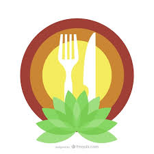

Sobre Nosotros
La Sociedad Gastronómica es una organización dedicada a promover la cultura culinaria y el disfrute de la buena comida. Nuestros miembros disfrutan de eventos, catas y experiencias culinarias únicas.
- Historia de la Sociedad
- Nuestro Equipo
- Misión y Valores